Go to the emergency room now if your access shows any of these:Pumunta agad sa emergency room kapag may alinman dito ang iyong access:Adto dayon sa emergency room kung naa niini ang imong access:Mako ngeni king emergency room nung atin nanuman kareni ing access mu:
- Bleeding that does not stop after 10 minutes of firm, steady pressure with a clean cloth, or bleeding that spurts.Pagdurugo na hindi tumitigil matapos ang 10 minutong mariin at tuloy-tuloy na pagdiin gamit ang malinis na tela, o dugong sumisirit.Pagdugo nga dili mohunong human sa 10 ka minutong lig-on ug padayon nga pagpislit gamit ang limpyo nga panapton, o dugo nga mosirit.Pamaldugu a e tatalakad kaybat ning 10 minutung masikan at e mipupugtung a pamipindut king malinis a tela, o daya a sumisirit.
- The buzz (thrill) is gone or suddenly very different, and you cannot feel it anywhere along the access.Nawala ang buzz (thrill) o biglang ibang-iba, at hindi mo na ito maramdaman saanman sa access.Nawala ang buzz (thrill) o kalit nga lahi kaayo, ug dili na nimo mabati bisan asa sa access.Mewala ing buzz (thrill) o biglang aliwa, at e mu na marandaman nanu man king access.
- The hand on the access side is cold, pale or blue, very painful, numb, or weak.Malamig, maputla o kulay-ube, sobrang sakit, manhid, o mahina ang kamay sa panig ng access.Bugnaw, luspad o asul, sakit kaayo, manhid, o huyang ang kamot sa kilid sa access.Maranun, maputla o kule-ube, masakit dili, manhid, o malatang ing gamat king lugal ning access.
- Fever or shaking chills, especially during or after dialysis, or redness, pus, or swelling at the access or catheter.Lagnat o nanginginig na ginaw, lalo na habang o pagkatapos mag-dialysis, o pamumula, nana, o pamamaga sa access o catheter.Hilanat o nagkurog nga katugnaw, labi na samtang o human sa dialysis, o pagpula, nana, o paghubag sa access o catheter.Lagnat o makikurug a malamig, lalu na kabang o kaybat ning dialysis, o pamula, nana, o pamalaga king access o catheter.
- Sudden trouble breathing, chest pain, or a racing heart.Biglang hirap huminga, pananakit ng dibdib, o napakabilis na tibok ng puso.Kalit nga kalisod sa pagginhawa, sakit sa dughan, o paspas kaayo nga pitik sa kasingkasing.Biglang kasakitan king manginawa, sakit king salu, o malagua dili a pitik ning pusu.
No calculator, chart, or checklist on this page should delay emergency care. Call your dialysis unit on the way.Walang calculator, tsart, o checklist dito na dapat magpaantala sa emergency care. Tawagan ang dialysis unit habang papunta.Walay calculator, tsart, o checklist dinhi nga angay molangan sa emergency care. Tawagi ang dialysis unit samtang padulong.Alang calculator, tsart, o checklist keni a dapat mamaburi king emergency care. Tawagan me ing dialysis unit kabang mako.
The one-minute answerAng sagot sa isang minutoAng tubag sa usa ka minutoIng sagot king metung a minutu
- Hemodialysis needs a way to move a lot of blood to the machine and back. That way in and out is your access: a fistula, a graft, or a catheter.Kailangan ng hemodialysis ng daan para maraming dugo ang dumaan sa makina at bumalik. Ang daang iyon ay ang iyong access: fistula, graft, o catheter.Ang hemodialysis nanginahanglan og agianan aron daghang dugo ang moagi sa makina ug mobalik. Kana nga agianan mao ang imong access: fistula, graft, o catheter.Ing hemodialysis kailangan ne ing dalan para dakal a daya ing malyari mako king makina at mibalik. Ita ing access mu: fistula, graft, o catheter.
- No single access is guaranteed to last forever. A lifeline that lasts a lifetime means a plan: the access you have now, how to protect it, and what comes next if it fails.Walang iisang access na garantisadong tatagal habambuhay. Ang lifeline na tatagal habambuhay ay isang plano: ang access mo ngayon, paano ito protektahan, at ano ang susunod kung pumalya ito.Walay usa ka access nga garantiyado nga molungtad hangtod sa kahangtoran. Ang lifeline nga molungtad sa tibuok kinabuhi usa ka plano: ang imong access karon, unsaon pagpanalipod, ug unsa ang sunod kung mapakyas kini.Alang metung a access a siguradung mamalyaring tumagal angga king kamatayan. Ing lifeline a tumagal ya king bie mu metung yang plano: ing access mu ngeni, makananu meng protektan, at nanu ing susunod nung mapalya ya.
- Start early, protect your arm veins, check your access every day, and speak up fast when something changes.Magsimula nang maaga, protektahan ang mga ugat sa braso, suriin ang access araw-araw, at magsalita agad kapag may nagbago.Sugdi og sayo, panalipdi ang mga ugat sa bukton, susiha ang access matag adlaw, ug isulti dayon kung naay nausab.Mumpisa kang aga, protektan me ding uyat king takiag mu, lawan me ing access aldo-aldo, at sabyan mu agad nung atin miyaliwa.
Paalala: draft pa ang salin na ito at hinihintay ang pagsusuri ng katutubong tagapagsalita. Ang Ingles na bersyon ang sinuri.Pahinumdom: draft pa kini nga hubad ug naghulat sa pagsusi sa lumad nga mamumulong. Ang Ingles nga bersyon ang nasusi.Paalala: draft pa ing salin a iti at manaya king pamanigaral ning katutubung manyalita. Ing Ingles a bersyun ing linawe.
What a dialysis access is, and why it is your lifelineAno ang dialysis access, at bakit ito ang iyong lifelineUnsa ang dialysis access, ug nganong kini ang imong lifelineNanu ing dialysis access, at nokarin ya ing lifeline mu
Think of your access as a busy bridge between your body and the dialysis machine. Three to four hours, three times a week, about 300 milliliters of blood a minute has to cross it and come back. A normal arm vein is too small and too slow for that traffic, so the access team builds a stronger crossing.Isipin ang iyong access bilang isang abalang tulay sa pagitan ng katawan at ng dialysis machine. Tatlo hanggang apat na oras, tatlong beses isang linggo, mga 300 mililitro ng dugo kada minuto ang dumadaan dito at bumabalik. Masyadong maliit at mabagal ang karaniwang ugat sa braso, kaya gumagawa ang access team ng mas matibay na tawiran.Hunahunaa ang imong access isip busy nga taytayan tali sa imong lawas ug sa dialysis machine. Tulo hangtod upat ka oras, tulo ka beses sa usa ka semana, mga 300 mililitro sa dugo kada minuto ang moagi niini ug mobalik. Gamay ra kaayo ug hinay ang naandang ugat sa bukton, mao nga ang access team mohimo og mas lig-on nga tabokanan.Isipan me ing access mu antimong matau a tete king pagitan ning katawan mu at ning dialysis machine. Atlu angga apat a oras, atlung beses king metung a dominggu, mga 300 mililitru a daya balang minutu ing dadalan keti at mibabalik. Malati at mabagal ing karaniwan a uyat king takiag, kaya gagawa ing access team ning matibe a pamagliban.
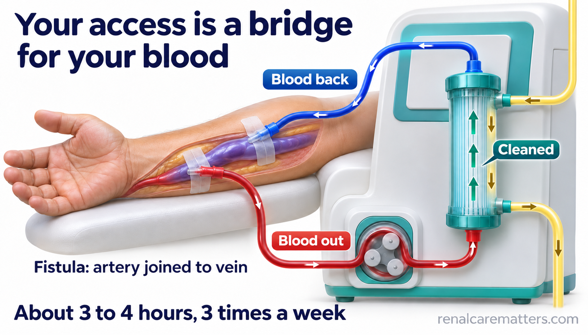
Blood leaves through one needle or catheter line, is cleaned in the machine, and returns through the other. The access is the bridge that makes this possible.Lumalabas ang dugo sa isang karayom o linya ng catheter, nililinis sa makina, at bumabalik sa kabila. Ang access ang tulay na nagpapagana nito.Mogawas ang dugo sa usa ka dagom o linya sa catheter, limpyohan sa makina, ug mobalik sa pikas. Ang access mao ang taytayan nga naghimo niini nga posible.Lulwal ya ing daya king metung a karayum o linya ning catheter, linisan ya king makina, at mibalik king kabila. Ing access ing tete a magpagana kaniti.
- AV
- Arteriovenous: joining an artery to a vein
© renalcarematters.com
| AccessAccessAccessAccess | How it is madePaano ginagawaGiunsa paghimoMakananu gagawan | What to knowDapat malamanAngay mahibaloanDapat mong abalu |
|---|---|---|
| Arteriovenous fistula (AVF)Arteriovenous fistula (AVF)Arteriovenous fistula (AVF)Arteriovenous fistula (AVF) | A surgeon joins an artery directly to a vein in your arm. Your own vein grows thicker and stronger.Pinagdurugtong ng siruhano ang arterya at ugat sa braso. Lumalaki at tumitibay ang sarili mong ugat.Gidugtong sa siruhano ang arterya ug ugat sa bukton. Modako ug molig-on ang imong kaugalingong ugat.Pagdugtungan ning siruhanu ing arterya at uyat king takiag mu. Mamaragul at titibe ing sariling uyat mu. | Usually needs weeks to months to be ready. When it works well, it often lasts long with fewer infections.Karaniwang ilang linggo hanggang buwan bago magamit. Kapag maayos, madalas itong tumatagal at mas kaunti ang impeksyon.Kasagaran pila ka semana hangtod bulan una magamit. Kung maayo, kasagaran molungtad ug mas gamay ang impeksyon.Karaniwan pilan a dominggu angga bulan bayu magamit. Nung mayap, kalimitan tumagal ya at mas kaunti ing impeksyun. |
| Arteriovenous graft (AVG)Arteriovenous graft (AVG)Arteriovenous graft (AVG)Arteriovenous graft (AVG) | A soft tube is placed under the skin to connect an artery and a vein.Isang malambot na tubo ang inilalagay sa ilalim ng balat para pagdugtungin ang arterya at ugat.Usa ka humok nga tubo ang ibutang ilalom sa panit aron idugtong ang arterya ug ugat.Metung a malambut a tubu ing ibili king lalam ning balat para pagdugtungan ing arterya at uyat. | Ready sooner than most fistulas. Tends to narrow or clot more often, so it may need more procedures.Mas maagang magagamit kaysa sa karamihan ng fistula. Mas madalas kumitid o mamuo ang dugo, kaya maaaring mas maraming procedure.Mas sayo magamit kaysa kadaghanan sa fistula. Mas kanunay mokitid o motuhop ang dugo, mao nga basin mas daghang procedure.Mas aga yang magamit kesa king dakal a fistula. Mas malimit yang kumitid o mamuu ing daya, kaya malyaring mas dakal a procedure. |
| Central venous catheter (CVC)Central venous catheter (CVC)Central venous catheter (CVC)Central venous catheter (CVC) | A soft tube goes into a large vein in the neck or chest, with two ends outside the skin.Isang malambot na tubo ang ipinapasok sa malaking ugat sa leeg o dibdib, na may dalawang dulo sa labas ng balat.Usa ka humok nga tubo ang isulod sa dakong ugat sa liog o dughan, nga adunay duha ka tumoy sa gawas sa panit.Metung a malambut a tubu ing pasok king maragul a uyat king batal o salu, a atin adwang dulu king lual ning balat. | Usable right away. Germs can travel along it, so it carries a higher infection risk; usually it is a bridge to a fistula, graft, transplant, or peritoneal dialysis.Magagamit agad. Maaaring dumaan ang mikrobyo rito kaya mas mataas ang panganib ng impeksyon; karaniwan itong pansamantalang tulay patungo sa fistula, graft, transplant, o peritoneal dialysis.Magamit dayon. Ang mikrobyo makaagi niini mao nga mas taas ang peligro sa impeksyon; kasagaran kini usa ka temporaryong taytayan padulong sa fistula, graft, transplant, o peritoneal dialysis.Magamit ya agad. Malyaring dalanan ning mikrobyu, kaya mas matas ing peligru ning impeksyun; kalimitan pansamantalang tete ya pasibayu king fistula, graft, transplant, o peritoneal dialysis. |
An access is not the same as kidney treatment choices. Peritoneal dialysis (PD), which uses the lining of the belly instead of a blood access, a kidney transplant, and supportive care without dialysis are all valid paths. Your team may move between them over the years, and good access planning keeps those doors open.Hindi pareho ang access at ang pagpili ng gamutan sa bato. Ang peritoneal dialysis (PD), na gumagamit ng lining ng tiyan sa halip na dugo, kidney transplant, at supportive care na walang dialysis ay pawang tamang landas. Maaaring lumipat ang iyong team sa pagitan ng mga ito sa paglipas ng taon, at ang maayos na plano sa access ay nagpapanatiling bukas ng mga pintong iyon.Ang access dili parehas sa pagpili sa pagtambal sa kidney. Ang peritoneal dialysis (PD), nga naggamit sa lining sa tiyan imbes nga dugo, kidney transplant, ug supportive care nga walay dialysis tanan husto nga dalan. Mahimong mobalhin ang imong team taliwala niini sa paglabay sa mga tuig, ug ang maayong plano sa access nagpabilin nga bukas sa maong mga pultahan.Ing access e pareu king pamamili ning panulu king batu. Ing peritoneal dialysis (PD), a gagamit king lining ning atian kesa king daya, ing kidney transplant, at ing supportive care a alang dialysis, deti ngan tamang dalan. Malyaring mipalit ing team mu king pagitan dareti king milabas a banwa, at ing mayap a plano king access ilili nang makabuklat dening pasbul a ita.
The Achilles heel: why accesses narrow, clot, or get infectedAng kahinaan: bakit kumikitid, namumuo, o naiimpeksyon ang accessAng kahuyang: nganong mokitid, motuhop, o ma-impeksyon ang accessIng kalatan: nokarin kumikitid, mamuu, o ma-impeksyun ing access
A fistula carries far more blood, far faster, than a vein was built for. The vein wall answers that pressure the way skin answers rubbing: it thickens. Usually that helps. But in some spots, often near the surgical join or where the vein bends, the thickening grows inward and narrows the channel. That narrowing is called a stenosis. When flow slows enough, blood can clot and block the access (thrombosis).Mas maraming dugo at mas mabilis ang dinadala ng fistula kaysa sa kaya ng isang karaniwang ugat. Sumasagot ang pader ng ugat sa presyon gaya ng balat na nakikiskis: kumakapal ito. Kadalasan nakakatulong iyon. Pero sa ilang bahagi, madalas malapit sa dugtungan o kung saan kumukurba ang ugat, kumakapal ito papaloob at kumikitid ang daluyan. Tinatawag itong stenosis. Kapag sapat nang bumagal ang daloy, maaaring mamuo ang dugo at barahan ang access (thrombosis).Ang fistula nagdala og mas daghang dugo ug mas paspas kaysa sa kaya sa naandang ugat. Mosanong ang bungbong sa ugat sa presyon sama sa panit nga gikiskis: mobaga kini. Kasagaran makatabang kana. Apan sa pipila ka bahin, kasagaran duol sa dugtungan o diin moliko ang ugat, mobaga kini pasulod ug mokitid ang agianan. Gitawag kini nga stenosis. Kung igo nang mohinay ang dagan, motuhop ang dugo ug bararan ang access (thrombosis).Mas dakal a daya at mas malagua ing dadalan ning fistula kesa king kaya ning karaniwan a uyat. Sasagut ing pader ning uyat king presyun antimong balat a kikiskisan: kakapal ya. Kalimitan makasaup ita. Oneng king nanung lugal, malimit malapit king dugtungan o nung nu kukurba ing uyat, kakapal ya paluub at kikitid ing dalan. Aus deng stenosis iti. Nung sapat nang bumagal ing agus, malyaring mamuu ing daya at sarakan ing access (thrombosis).
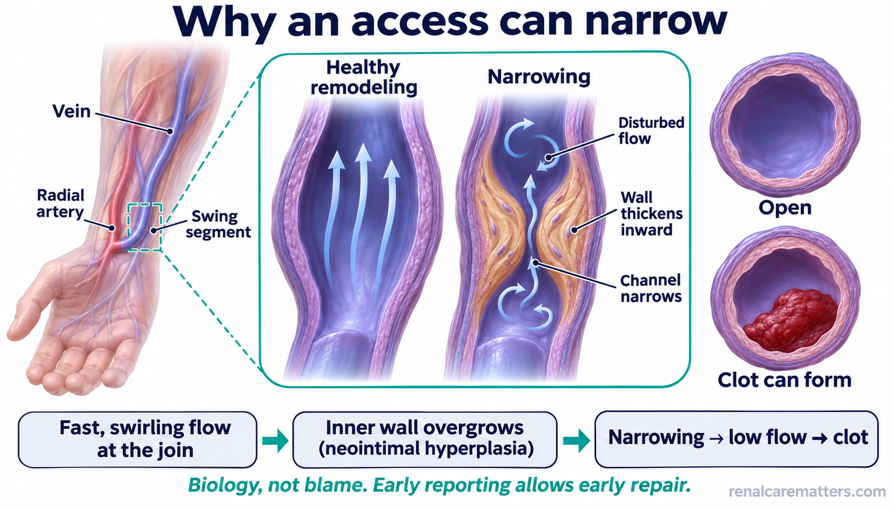
Fast, swirling blood near the surgical join can make the vein wall thicken inward. The channel narrows, flow slows, and a clot can form.Ang mabilis at umiikot na dugo malapit sa dugtungan ay maaaring magpakapal ng pader ng ugat papaloob. Kumikitid ang daluyan, bumabagal ang daloy, at maaaring mamuo ang dugo.Ang paspas ug nagtuyok nga dugo duol sa dugtungan makapabaga sa bungbong sa ugat pasulod. Mokitid ang agianan, mohinay ang dagan, ug motuhop ang dugo.Ing malagua at mikikulikut a daya malapit king dugtungan malyaring mamakapal king pader ning uyat paluub. Kikitid ing dalan, bubagal ing agus, at malyaring mamuu ing daya.
© renalcarematters.com
Other problems are different and need different fixes: a new fistula that never grows big enough (non-maturation), needle injuries and bruising, bulges in the vein (aneurysms), infection, a hand that gets too little blood (steal), narrowing of the big chest veins after catheters or pacemaker wires, and, rarely, a very high-flow fistula that overworks the heart. None of these means you or your nurse did something wrong. Many are simply how blood vessels react to dialysis.Iba-iba ang ibang problema at iba ang lunas: bagong fistula na hindi lumalaki nang sapat (non-maturation), sugat at pasa mula sa karayom, umbok sa ugat (aneurysm), impeksyon, kamay na kulang sa dugo (steal), pagkitid ng malalaking ugat sa dibdib pagkatapos ng catheter o kawad ng pacemaker, at bihira, fistula na napakalakas ng daloy kaya napapagod ang puso. Wala sa mga ito ang nangangahulugang ikaw o ang nurse ang nagkamali. Marami ay reaksyon lang ng ugat sa dialysis.Lahi-lahi ang ubang problema ug lahi ang tambal: bag-ong fistula nga dili modako og igo (non-maturation), samad ug pasa gikan sa dagom, bukol sa ugat (aneurysm), impeksyon, kamot nga kulang sa dugo (steal), pagkitid sa dagkong ugat sa dughan human sa catheter o alambre sa pacemaker, ug panagsa, fistula nga kusog kaayo ang dagan mao nga mapagod ang kasingkasing. Walay usa niini nga nagpasabot nga ikaw o ang nurse ang nasayop. Daghan niini reaksyon lang sa ugat sa dialysis.Aliwa-aliwa la ding aliwang problema at aliwa ing panulu: bayung fistula a e mamaragul king sapat (non-maturation), sugat at pasa ning karayum, ambun king uyat (aneurysm), impeksyun, gamat a kulang king daya (steal), pamikitid ding maragul a uyat king salu kaybat ning catheter o kawad ning pacemaker, at bihira, fistula a masikan dili ing agus kaya mapapagal ing pusu. Alang metung kareti a buri nang sabyan a ika o ing nurse ing mekamali. Dakal kareti reaksyun mu ning uyat king dialysis.
Protect your veins today for the access you may need laterProtektahan ang iyong mga ugat ngayon para sa access na maaaring kailanganin moPanalipdi ang imong mga ugat karon alang sa access nga basin kinahanglanon nimoProtektan me ding uyat mu ngeni para king access a malyaring kailangan mu
A fistula needs a healthy vein. Every needle stick, drip line, or long catheter in your arm can scar the veins you will need. If your kidney function is falling, or your doctor has mentioned dialysis, start protecting one arm now, usually the one you do not write with.Kailangan ng fistula ang malusog na ugat. Bawat turok ng karayom, swero, o mahabang catheter sa braso ay maaaring magpeklat sa ugat na kakailanganin mo. Kung bumababa ang kidney function mo o nabanggit na ng doktor ang dialysis, simulan nang protektahan ang isang braso, karaniwan ang hindi mo ginagamit sa pagsulat.Ang fistula nanginahanglan og himsog nga ugat. Matag tusok sa dagom, swero, o taas nga catheter sa bukton makapaplat sa ugat nga imong kinahanglanon. Kung nagkaubos ang kidney function o nahisgotan na sa doktor ang dialysis, sugdi na karon pagpanalipod sa usa ka bukton, kasagaran ang dili nimo gamiton sa pagsulat.Kailangan ning fistula ing masalikutan a uyat. Balang tusuk ning karayum, swero, o malawak a catheter king takiag malyaring mamaging piklat king uyat a kailangan mu. Nung bubaba ing kidney function mu o mebanggit na ning doktor ing dialysis, mumpisa na ngeni a protektan ing metung a takiag, karaniwan ing e mu gagamitan king panyulat.
DoGawinBuhataGawan
- Ask for blood tests and drips on the hand or arm your team is not saving.Hilingin na sa kamay o brasong hindi inilalaan ng team gawin ang blood test at swero.Hangyoa nga sa kamot o bukton nga dili gitagana sa team himuon ang blood test ug swero.Pakisabyan mu a king gamat o takiag a e lilinan ning team gawan ing blood test at swero.
- Tell every new nurse or doctor: "Please save this arm for my dialysis access."Sabihin sa bawat bagong nurse o doktor: "Pakiusap, ilaan ang brasong ito para sa aking dialysis access."Isulti sa matag bag-ong nurse o doktor: "Palihug, itagana kini nga bukton para sa akong dialysis access."Sabyan mu king balang bayung nurse o doktor: "Pakiusap, lilinan ye ing takiag a iti para king dialysis access ku."
- Ask early how your kidney function is trending and when to meet the access surgeon.Magtanong nang maaga kung paano ang takbo ng kidney function at kailan makikipagkita sa access surgeon.Pangutana og sayo kung unsa ang dagan sa kidney function ug kanus-a makigkita sa access surgeon.Magtanung kang aga nung makananu ing takbu ning kidney function mu at kapilan makilala ing access surgeon.
Avoid in the saved armIwasan sa inilaang brasoLikayi sa gitagana nga buktonPangilagan king linilinan a takiag
- Blood draws, drips, and blood pressure cuffs, unless there is no other choice.Pagkuha ng dugo, swero, at blood pressure cuff, maliban kung walang ibang pagpipilian.Pagkuha og dugo, swero, ug blood pressure cuff, gawas kung walay laing kapilian.Pamangua daya, swero, at blood pressure cuff, liban nung alang aliwang pipiliyan.
- A peripherally inserted central catheter (PICC) line. Ask whether another kind of line can be used.Peripherally inserted central catheter (PICC) line. Itanong kung may ibang uri ng linya na maaaring gamitin.Peripherally inserted central catheter (PICC) line. Pangutana kung naay laing klase sa linya nga magamit.Peripherally inserted central catheter (PICC) line. Itanung mu nung atin aliwang klasi ning linya a malyaring gamitan.
- Tight sleeves, watches, or bags hanging on the arm once a fistula or graft is made.Masisikip na manggas, relo, o bag na nakasabit sa braso kapag may fistula o graft na.Hugot nga bukton sa sinina, relo, o bag nga gibitay sa bukton kung naa nay fistula o graft.Masikip a manggas, relo, o bag a makasabit king takiag nung atin ng fistula o graft.
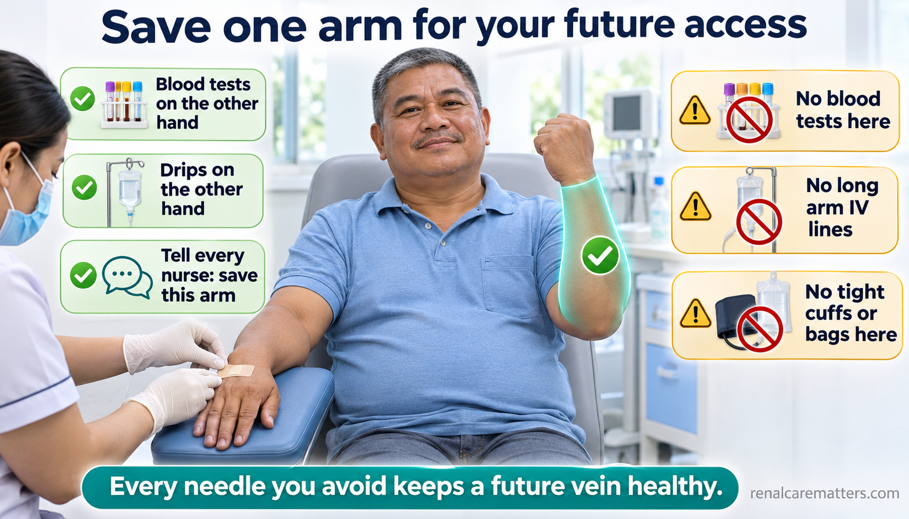
Save one arm. Use the other hand or arm for blood tests and drips whenever possible.Ilaan ang isang braso. Gamitin ang kabilang kamay o braso para sa blood test at swero hangga't maaari.Itagana ang usa ka bukton. Gamita ang pikas kamot o bukton para sa blood test ug swero kutob sa mahimo.Lilinan me ing metung a takiag. Gamitan me ing kabilang gamat o takiag para king blood test at swero nung malyari.
© renalcarematters.com
Your team can estimate how fast your kidneys are heading toward failure with a simple score called the Kidney Failure Risk Equation (KFRE). When the 2-year risk is high, international kidney guidance suggests it is time to prepare for treatment, which includes planning the access.Matatantiya ng team kung gaano kabilis papalapit sa pagpalya ang bato gamit ang simpleng score na Kidney Failure Risk Equation (KFRE). Kapag mataas ang 2-taong panganib, iminumungkahi ng pandaigdigang gabay na oras nang maghanda, kasama ang pagpaplano ng access.Mabanabana sa team kung unsa ka paspas padulong sa pagkapakyas ang kidney gamit ang simple nga score nga Kidney Failure Risk Equation (KFRE). Kung taas ang 2-ka-tuig nga peligro, ang internasyonal nga giya nagsugyot nga panahon na sa pag-andam, lakip ang pagplano sa access.Malyaring tantyan ning team nung makananu kalagua papalapit king pamalya ing batu king simpling score a Kidney Failure Risk Equation (KFRE). Nung matas ing peligru king 2 banwa, ing pandaigdigang giya mangisabi a panaun nang maghanda, kayabe ing pamaplanu king access.
Choosing an access together with your teamPagpili ng access kasama ang iyong teamPagpili sa access uban sa imong teamPamili ning access kayabe ing team mu
The old rule was "fistula first for everyone." Current guidance from the United States and the United Kingdom asks for something better: the right access, for the right person, at the right time, chosen with you. A fistula is often the best long-term option, but not always. For someone who needs dialysis soon, has small veins, or has other health priorities, a graft, a catheter for a while, or peritoneal dialysis can be the wiser choice.Ang dating panuntunan ay "fistula muna para sa lahat." Ang kasalukuyang gabay mula sa Estados Unidos at United Kingdom ay humihingi ng mas mabuti: ang tamang access, para sa tamang tao, sa tamang panahon, na pinipili kasama ka. Madalas na fistula ang pinakamahusay sa pangmatagalan, pero hindi palagi. Para sa nangangailangan ng dialysis agad, may maliliit na ugat, o may ibang priyoridad sa kalusugan, maaaring mas matalino ang graft, catheter muna, o peritoneal dialysis.Ang daan nga lagda mao ang "fistula una para sa tanan." Ang karon nga giya gikan sa Estados Unidos ug United Kingdom nangayo og mas maayo: ang husto nga access, para sa husto nga tawo, sa husto nga panahon, nga gipili uban kanimo. Kasagaran fistula ang labing maayo sa dugay nga panahon, apan dili kanunay. Para sa nanginahanglan og dialysis dayon, gagmay og ugat, o adunay laing prayoridad sa panglawas, mahimong mas maalamon ang graft, catheter una, o peritoneal dialysis.Ing matuang patakaran "fistula muna para king sablang tau." Ing gabay ngeni ibat king Estados Unidos at United Kingdom ali mas mayap: ing tamang access, para king tamang tau, king tamang panaun, a pipiliyan kayabe ka. Kalimitan fistula ing pekamayap king malawak a panaun, oneng e pane. Para king kailangan agad ning dialysis, malati ding uyat, o atin aliwang priyoridad king salikut, malyaring mas matalinu ing graft, catheter pamu, o peritoneal dialysis.
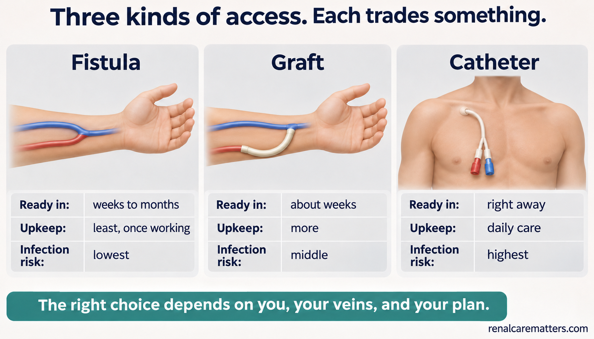
Fistula, graft, and catheter each trade speed, durability, and infection risk differently. There is no single winner for everyone.Ang fistula, graft, at catheter ay may kanya-kanyang kapalit sa bilis, tibay, at panganib ng impeksyon. Walang iisang panalo para sa lahat.Ang fistula, graft, ug catheter adunay kaugalingong baylo sa kapaspas, kalig-on, ug peligro sa impeksyon. Walay usa ka mananaog para sa tanan.Ing fistula, graft, at catheter atin ngan kaniang kapalit king kalagua, katibe, at peligru ning impeksyun. Alang metung a manalu para king sablang tau.
© renalcarematters.com
Good questions to bring: How soon will I need dialysis? Which arm, and why? How long until the access can be used, and what is the backup? How many procedures might it need? What will it cost me, and what does PhilHealth (Philippine Health Insurance Corporation) or my health maintenance organization (HMO) cover? Could peritoneal dialysis or a transplant fit my life?Magandang itanong: Gaano kaaga ko kailangan ng dialysis? Aling braso, at bakit? Gaano katagal bago magamit ang access, at ano ang backup? Ilang procedure ang maaaring kailanganin? Magkano ang gagastusin ko, at ano ang sakop ng PhilHealth o HMO? Bagay ba sa buhay ko ang peritoneal dialysis o transplant?Maayong pangutana: Kanus-a nako kinahanglan ang dialysis? Asa nga bukton, ug ngano? Unsa kadugay una magamit ang access, ug unsa ang backup? Pila ka procedure ang basin kinahanglan? Pila ang akong gastohon, ug unsa ang sakop sa PhilHealth o HMO? Haom ba sa akong kinabuhi ang peritoneal dialysis o transplant?Mayap a itanung: Kapilan ku kailangan ing dialysis? Nanung takiag, at nokarin? Makanu katagal bayu magamit ing access, at nanu ing backup? Pilan a procedure ing malyaring kailangan? Makanu ing gastusan ku, at nanu ing sakup ning PhilHealth o HMO? Bage ya king bie ku ing peritoneal dialysis o transplant?
From surgery to first needles: giving a new fistula time to growMula operasyon hanggang unang karayom: bigyan ng panahon ang bagong fistulaGikan sa operasyon hangtod sa unang dagom: hatagi og panahon ang bag-ong fistulaIbat king operasyun angga king mumunang karayum: bien yang panaun ing bayung fistula
A new fistula has to mature: the vein widens and its wall strengthens until it can take two needles safely, session after session. A date on the calendar alone does not decide this. Your team checks how it looks and feels, often with an ultrasound, and the first needling is planned by an experienced nurse.Kailangang mag-mature ang bagong fistula: lumalapad ang ugat at tumitibay ang pader hanggang kaya na nito ang dalawang karayom nang ligtas, sesyon kada sesyon. Hindi lang petsa sa kalendaryo ang nagpapasya. Sinusuri ng team kung paano ito tingnan at damhin, madalas gamit ang ultrasound, at pinaplano ng bihasang nurse ang unang turok.Kinahanglan mo-mature ang bag-ong fistula: molapad ang ugat ug molig-on ang bungbong hangtod makaya na niini ang duha ka dagom nga luwas, matag sesyon. Dili lang petsa sa kalendaryo ang modesisyon. Susihon sa team kung unsa kini tan-awon ug batyon, kasagaran gamit ang ultrasound, ug ang unang tusok planohon sa batid nga nurse.Kailangan mag-mature ing bayung fistula: lalapad ing uyat at titibe ing pader angga king kaya na ning adwang karayum a ligtas, balang sesyun. E mu petsa king kalendaryu ing magdesisyun. Lalawan ning team nung makananu ya lawan at damdaman, malimit king ultrasound, at ing mumunang tusuk planuan ning batid a nurse.
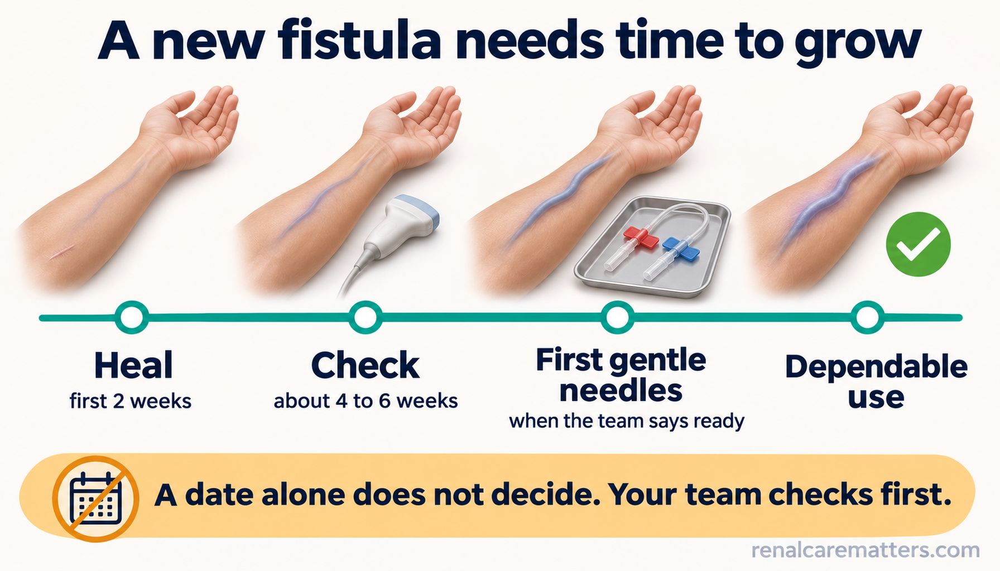
Healing, checking, first gentle needles, then dependable use. Each step has an owner and a review date.Paggaling, pagsusuri, unang maingat na karayom, saka maaasahang paggamit. May taong responsable at petsa ng pagsusuri ang bawat hakbang.Pag-ayo, pagsusi, unang mainampingong dagom, unya kasaligang paggamit. Matag lakang adunay tag-iya ug petsa sa pagsusi.Pamagumpaya, pamanyalikut, mumunang maingat a karayum, kaybat masasaligan a pamamagamit. Balang dalan atin taung responsable at petsa ning pamanyalikut.
© renalcarematters.com
Ask your surgeon whether simple hand-squeeze exercises are right for you. Small studies show they can widen arm veins, but they have not been proven to make fistulas mature more often, so treat them as a helper, not a guarantee.Itanong sa siruhano kung angkop sa iyo ang simpleng pagpisil ng kamay. Ipinapakita ng maliliit na pag-aaral na maaari nitong palaparin ang ugat sa braso, pero hindi pa napapatunayan na mas madalas mag-mature ang fistula, kaya ituring itong katulong, hindi garantiya.Pangutana sa siruhano kung angay nimo ang simple nga pagpiga sa kamot. Gipakita sa gagmay nga pagtuon nga makapalapad kini sa ugat sa bukton, apan wala pa mapamatud-i nga mas kanunay mo-mature ang fistula, mao nga isipa kini nga katabang, dili garantiya.Itanung mu king siruhanu nung bage keka ing simpling pamipisil ning gamat. Ipakit ding malating pag-aral a malyari nang palaparan ing uyat king takiag, oneng e pa mapatunayan a mas malimit mag-mature ing fistula, kaya isipan meng katulung, e garantiya.
Look, listen, feel: your two-minute daily checkTingnan, pakinggan, damhin: ang iyong dalawang-minutong pagsusuri araw-arawTan-awa, paminawa, batia: ang imong duha-ka-minutong pagsusi adlaw-adlawLawan, pakiramdaman, damdaman: ing adwang minutung pamanyalikut aldo-aldo
You are the person who sees your access most often. A short daily check catches trouble early, often while it can still be fixed without losing the access.Ikaw ang pinakamadalas makakita ng iyong access. Ang maikling pagsusuri araw-araw ay nakakahuli ng problema nang maaga, madalas habang maaayos pa nang hindi nawawala ang access.Ikaw ang kanunay makakita sa imong access. Ang mubo nga pagsusi adlaw-adlaw makadakop sa problema og sayo, kasagaran samtang maayo pa nga dili mawala ang access.Ika ing pekamalimit makakit king access mu. Ing malagad a pamanyalikut aldo-aldo makakua problema kang aga, malimit kabang mapayapan pa nang e mawala ing access.
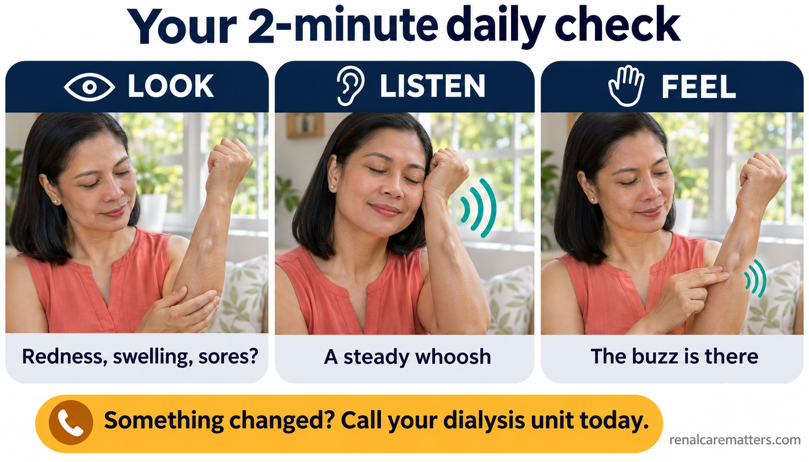
Look for redness, swelling, or sores. Listen for the steady whoosh. Feel for the buzz. If anything changes, tell your dialysis team the same day.Tingnan kung may pamumula, pamamaga, o sugat. Pakinggan ang tuloy-tuloy na whoosh. Damhin ang buzz. Kapag may nagbago, sabihan ang dialysis team sa parehong araw.Tan-awa kung naay pagpula, paghubag, o samad. Paminawa ang padayong whoosh. Batia ang buzz. Kung naay nausab, sultihi ang dialysis team sa samang adlaw.Lawan nung atin pamula, pamalaga, o sugat. Pakiramdaman ing mipupugtung a whoosh. Damdaman ing buzz. Nung atin miyaliwa, sabyan me ing dialysis team king pareung aldo.
© renalcarematters.com
- Keep it clean. Wash the access arm with soap and water before every session.Panatilihing malinis. Hugasan ng sabon at tubig ang braso bago ang bawat sesyon.Hupti nga limpyo. Hugasi og sabon ug tubig ang bukton sa dili pa ang matag sesyon.Panatilian meng malinis. Pamuyan me king sabun at danum ing takiag bayu ing balang sesyun.
- Do not sleep on it or carry heavy loads with it. Avoid tight clothing.Huwag itong tulugan o pagbitbitan ng mabigat. Iwasan ang masisikip na damit.Ayaw kini higdai o pagbitbit og bug-at. Likayi ang hugot nga sinina.Ali me tudtudan o pamitbit ning mabayat. Pangilagan ing masikip a imalan.
- Speak up about pain. Needling should not be agony. Numbing creams, a different site, or a more experienced nurse can help.Magsalita tungkol sa sakit. Hindi dapat sobrang sakit ang pagturok. Makakatulong ang pampamanhid na cream, ibang lugar, o mas bihasang nurse.Isulti ang kasakit. Dili angay nga grabe kasakit ang pagtusok. Makatabang ang pampamanhid nga cream, laing lugar, o mas batid nga nurse.Sabyan mu ing sakit. E dapat masakit dili ing pamanusuk. Makasaup ing pampamanhid a cream, aliwang lugal, o mas batid a nurse.
- After dialysis, press gently on the needle sites until bleeding stops; do not press so hard that you lose the buzz.Pagkatapos ng dialysis, diinan nang marahan ang tinurukan hanggang tumigil ang dugo; huwag diinan nang sobra na nawawala ang buzz.Human sa dialysis, pislita og hinay ang tinusokan hangtod mohunong ang dugo; ayaw pislita og kusog nga mawala ang buzz.Kaybat ning dialysis, pindutan me malumanay ing tinusukan angga king tumalakad ing daya; ali me pindutan masikan anggang mawala ing buzz.
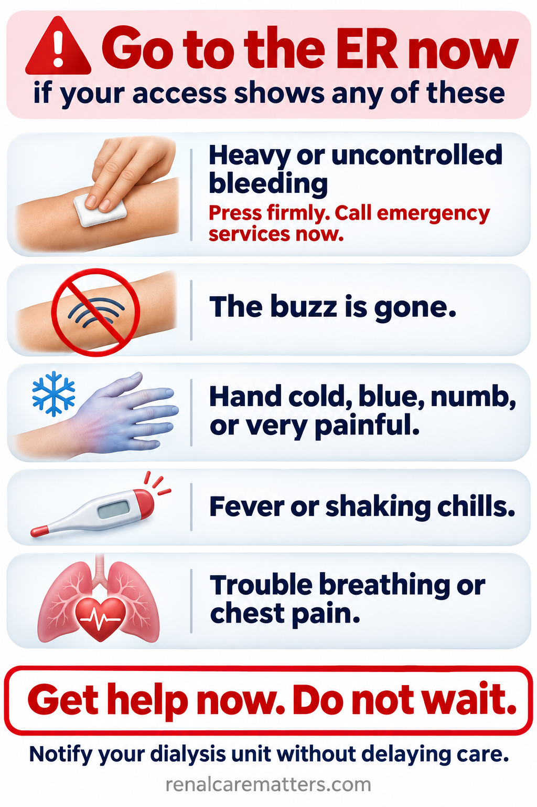
These five signs need emergency care now, not a calculator and not a wait until the next session.Ang limang palatandaang ito ay nangangailangan ng emergency care ngayon, hindi calculator at hindi paghihintay sa susunod na sesyon.Kining lima ka timailhan nanginahanglan og emergency care karon, dili calculator ug dili paghulat sa sunod nga sesyon.Deng limang tanda a iti kailangan dang emergency care ngeni, e calculator at e pamaglaus king susunod a sesyun.
© renalcarematters.com
Living safely with a catheter, and planning the way off itLigtas na pamumuhay kasama ang catheter, at plano para maalis itoLuwas nga pagkinabuhi uban ang catheter, ug plano aron makuha kiniLigtas a bie kayabe ing catheter, at planu para mekuang ya
A catheter can save a life when dialysis is needed quickly, and for some people it is the best long-term choice. Its weak spot is that the tube links the outside world to your bloodstream, so germs have a path in. Your nurses follow strict clean steps every time they open it. You help by keeping the dressing dry and closed, never letting anyone but trained staff open the caps, and reporting fever at once.Nakapagliligtas ng buhay ang catheter kapag kailangan agad ang dialysis, at para sa ilan ito ang pinakamainam na pangmatagalang pagpipilian. Ang kahinaan nito ay ikinokonekta ng tubo ang labas sa iyong dugo, kaya may daan ang mikrobyo. Mahigpit ang malinis na hakbang ng mga nurse tuwing bubuksan ito. Nakakatulong ka sa pagpapanatiling tuyo at sarado ng dressing, hindi pagpapabukas ng takip sa hindi sinanay na tao, at agad na pag-uulat ng lagnat.Makaluwas og kinabuhi ang catheter kung kinahanglan dayon ang dialysis, ug para sa uban kini ang labing maayo nga dugay nga kapilian. Ang kahuyang niini mao nga ang tubo nagkonektar sa gawas ngadto sa imong dugo, mao nga naay agianan ang mikrobyo. Estrikto ang limpyo nga lakang sa mga nurse matag abli niini. Makatabang ka pinaagi sa pagpabilin nga uga ug sirado ang dressing, dili pagpaabli sa takob sa dili batid, ug dayon pagreport sa hilanat.Makaligtas bie ing catheter nung kailangan agad ing dialysis, at para king nanu pekamayap yang pipiliyan king malawak a panaun. Ing kalatan na, ikonekta ning tubu ing lual king daya mu, kaya atin dalan ing mikrobyu. Mayigpit ing malinis a dalan dareng nurse balang buklat ra. Makasaup ka king pamanatili king dressing a mamaga at makasara, e pamipabuklat king takip king e sinanay, at agad a pamanyabi nung atin lagnat.
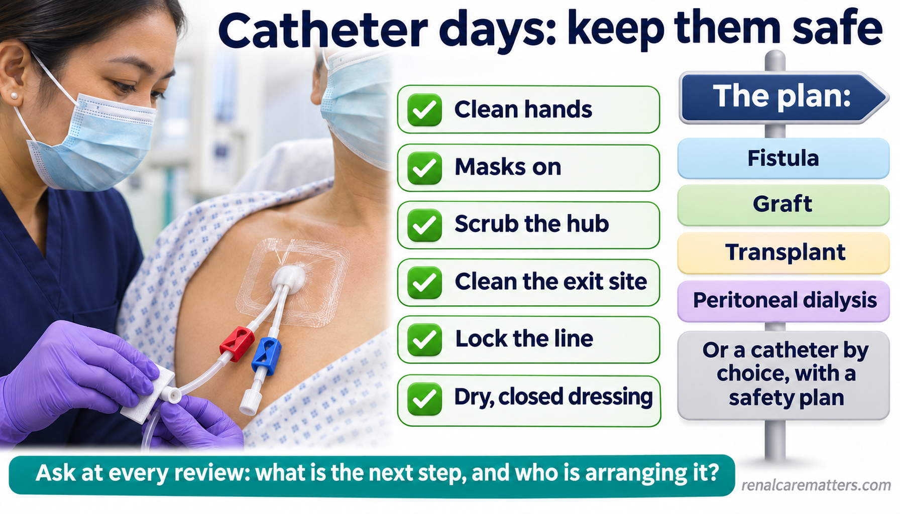
Clean hands, masks, scrubbed hubs, and a dry dressing protect the bloodstream. Alongside care, keep asking about the plan to remove the catheter when that is right for you.Malinis na kamay, mask, nilinis na hub, at tuyong dressing ang nagpoprotekta sa dugo. Kasabay ng pag-aalaga, patuloy na magtanong tungkol sa plano para alisin ang catheter kapag angkop.Limpyo nga kamot, mask, gilimpyohan nga hub, ug uga nga dressing ang mopanalipod sa dugo. Uban sa pag-atiman, padayon pagpangutana bahin sa plano sa pagkuha sa catheter kung angay.Malinis a gamat, mask, linisan a hub, at mamaga a dressing ing protektan king daya. Kayabe ning pamanalaga, mipupugtung kang magtanung tungkul king planu a kuanan ing catheter nung bage.
© renalcarematters.com
Ask at each review: Why do I still have the catheter? What is the next step to a fistula, graft, transplant, or peritoneal dialysis, and who is arranging it? If keeping the catheter is the right choice for you, ask what extra safety steps are in place.Itanong sa bawat pagsusuri: Bakit may catheter pa ako? Ano ang susunod na hakbang patungo sa fistula, graft, transplant, o peritoneal dialysis, at sino ang nag-aayos? Kung tamang piliin na manatili ang catheter, itanong ang dagdag na hakbang pangkaligtasan.Pangutana sa matag pagsusi: Nganong naa pa koy catheter? Unsa ang sunod nga lakang padulong sa fistula, graft, transplant, o peritoneal dialysis, ug kinsa ang nag-andam? Kung husto nga magpabilin ang catheter, pangutana sa dugang nga lakang sa kaluwasan.Itanung mu king balang pamanyalikut: Nokarin atin ku pang catheter? Nanu ing susunod a dalan pasibayu king fistula, graft, transplant, o peritoneal dialysis, at ninu ing mag-ayus? Nung tama a manatili ing catheter, itanung mu ing dagdag a dalan para king kaligtasan.
Fixing a failing access, and keeping the next option readyPag-aayos ng pumapalyang access, at paghahanda ng susunod na opsyonPag-ayo sa nagkapakyas nga access, ug pag-andam sa sunod nga kapilianPamag-ayus king mapalyang access, at pamaghanda king susunod a pipiliyan
When a narrowing is found and it is causing real problems, a specialist can often open it from inside with a small balloon (angioplasty), remove a clot (thrombectomy), or repair it surgically. Some balloons are coated with a drug that slows re-narrowing; in a large trial, they kept fistulas open longer than plain balloons, but the access can still need future procedures.Kapag may nakitang pagkitid na nagdudulot ng tunay na problema, kadalasan nabubuksan ito ng espesyalista mula sa loob gamit ang maliit na lobo (angioplasty), natatanggal ang namuong dugo (thrombectomy), o naaayos sa operasyon. May mga lobong may gamot na nagpapabagal ng muling pagkitid; sa malaking pag-aaral, mas matagal na bukas ang fistula kumpara sa karaniwang lobo, pero maaari pa ring kailanganin ang susunod na procedure.Kung naay nakit-ang pagkitid nga nagpahinabo og tinuod nga problema, kasagaran maablihan kini sa espesyalista gikan sa sulod gamit ang gamay nga lobo (angioplasty), makuha ang tuhop sa dugo (thrombectomy), o maayo sa operasyon. Ang uban nga lobo adunay tambal nga nagpahinay sa pagkitid pag-usab; sa dakong pagtuon, mas dugay nga bukas ang fistula kumpara sa naandang lobo, apan mahimong kinahanglan gihapon ang sunod nga procedure.Nung atin akit a pamikitid a magdulut ning tune a problema, kalimitan buklatan ne ning espesyalista ibat king lub king malating lobu (angioplasty), kuanan ing memu a daya (thrombectomy), o ayusan king operasyun. Atin lobu a atin gamut a mamabagal king pamikitid pasibayu; king maragul a pag-aral, mas matagal a makabuklat ing fistula kesa king karaniwang lobu, oneng malyari pa ring kailangan ing susunod a procedure.
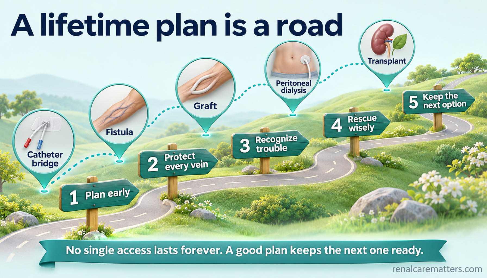
A lifetime plan is a road with stops, not one single access. Protecting veins today keeps tomorrow's options open.Ang plano habambuhay ay daan na may mga hintuan, hindi iisang access. Ang pagprotekta sa ugat ngayon ay nagpapanatiling bukas ng opsyon bukas.Ang plano sa tibuok kinabuhi usa ka dalan nga adunay mga hunonganan, dili usa lang ka access. Ang pagpanalipod sa ugat karon nagpabilin nga bukas sa kapilian ugma.Ing planu king bie metung yang dalan a atin pamikakalan, e metung mung access. Ing pamanyalikut king uyat ngeni ilili nang makabuklat ing pipiliyan bukas.
© renalcarematters.com
Every procedure is also a decision about the future. A stent placed today may affect where a new access can go later. If your access fails again and again, ask for a team review that includes your nephrologist, surgeon, and interventional specialist, so the next step protects your remaining options.Bawat procedure ay desisyon din tungkol sa hinaharap. Ang stent na inilagay ngayon ay maaaring makaapekto kung saan mailalagay ang bagong access. Kung paulit-ulit na pumapalya ang access, humiling ng pagsusuri ng team na kasama ang nephrologist, siruhano, at interventional specialist, para maprotektahan ng susunod na hakbang ang natitirang opsyon.Matag procedure usa usab ka desisyon bahin sa umaabot. Ang stent nga gibutang karon mahimong makaapekto kung asa ibutang ang bag-ong access. Kung balik-balik nga mapakyas ang access, pangayo og pagsusi sa team nga naglakip sa nephrologist, siruhano, ug interventional specialist, aron ang sunod nga lakang mopanalipod sa nahabilin nga kapilian.Balang procedure desisyun ya mu rin tungkul king darating. Ing stent a ibili ngeni malyaring makaapektu nung nu ibili ing bayung access. Nung paulit-ulit a mapalya ing access, ali kang pamanyalikut ning team a kayabe ing nephrologist, siruhanu, at interventional specialist, para protektan ning susunod a dalan ing mekabiling pipiliyan.
Things that have not been shown to helpMga bagay na hindi napatunayang nakakatulongMga butang nga wala mapamatud-ang makatabangBage a e mapatunayang makasaup
In a large trial, fish oil and aspirin did not stop new fistulas from failing. A 2026 trial of far-infrared heat therapy did not reduce procedures. Spend your energy on vein protection, daily checks, and early reporting.Sa malaking pag-aaral, hindi napigilan ng fish oil at aspirin ang pagpalya ng bagong fistula. Sa isang pag-aaral noong 2026, hindi nabawasan ng far-infrared heat therapy ang mga procedure. Ituon ang lakas sa pagprotekta ng ugat, araw-araw na pagsusuri, at maagang pag-uulat.Sa dakong pagtuon, wala mapugngi sa fish oil ug aspirin ang pagkapakyas sa bag-ong fistula. Sa usa ka pagtuon sa 2026, wala makunhuri sa far-infrared heat therapy ang mga procedure. Ibutang ang kusog sa pagpanalipod sa ugat, adlaw-adlaw nga pagsusi, ug sayo nga pagreport.King maragul a pag-aral, e apigilan ning fish oil at aspirin ing pamalya ning bayung fistula. King metung a pag-aral king 2026, e akunian ning far-infrared heat therapy ding procedure. Itutuk me ing sikan mu king pamanyalikut king uyat, aldo-aldong pamanyalikut, at agad a pamanyabi.
Carry your access story with youDalhin ang kuwento ng iyong accessDad-a ang istorya sa imong accessDarwan me ing kwentu ning access mu
Doctors in a new hospital often do not know which veins were used, which catheters came before, or what your plan is. A one-page access passport answers those questions in seconds and helps protect your next option.Madalas hindi alam ng doktor sa bagong ospital kung aling ugat ang nagamit, aling catheter ang nauna, o ano ang plano mo. Ang isang-pahinang access passport ay sumasagot dito sa ilang segundo at tumutulong protektahan ang susunod mong opsyon.Kasagaran wala mahibal-i sa doktor sa bag-ong ospital kung asa nga ugat ang nagamit, asa nga catheter ang nauna, o unsa ang imong plano. Ang usa-ka-panid nga access passport motubag niini sa pila ka segundo ug motabang pagpanalipod sa imong sunod nga kapilian.Malimit e balu ning doktor king bayung ospital nung nanung uyat ing megamit, nanung catheter ing mekaunang, o nanu ing planu mu. Ing metung-bulung a access passport sasagut kareti king pilan a segundu at tutulung a protektan ing susunod mung pipiliyan.
Fill this in on screen, then print it. Nothing you type is saved or sent anywhere; it disappears when you close the page.Punan ito sa screen, saka i-print. Walang tinatype mo ang naiimbak o naipapadala; nawawala ito kapag isinara ang pahina.Pun-a kini sa screen, unya i-print. Walay imong gi-type ang matipigan o mapadala; mawala kini kung sirad-an ang panid.Punan me iti king screen, kaybat i-print. Alang tinype mu a maimbak o mipadala; mawala ya nung isara me ing bulung.
Practical notes for Filipino familiesPraktikal na paalala para sa pamilyang PilipinoPraktikal nga pahinumdom para sa pamilyang PilipinoPraktikal a paalala para king pamilyang Pilipinu
- Coverage changes. PhilHealth has a hemodialysis benefit, but what it pays for access surgery, catheters, and repair procedures can change. Ask the PhilHealth desk, your HMO, or the social worker before a planned procedure.Nagbabago ang sakop. May hemodialysis benefit ang PhilHealth, pero maaaring magbago ang binabayaran nito para sa access surgery, catheter, at pag-aayos. Magtanong sa PhilHealth desk, HMO, o social worker bago ang nakaplanong procedure.Mausab ang sakop. Naay hemodialysis benefit ang PhilHealth, apan mahimong mausab ang gibayran niini para sa access surgery, catheter, ug pag-ayo. Pangutana sa PhilHealth desk, HMO, o social worker sa dili pa ang giplano nga procedure.Miyaliwa ing sakup. Atin hemodialysis benefit ing PhilHealth, oneng malyaring miyaliwa ing bayaran na para king access surgery, catheter, at pamag-ayus. Magtanung ka king PhilHealth desk, HMO, o social worker bayu ing planung procedure.
- Plan before the emergency. Starting dialysis in an emergency usually means starting with a catheter. Seeing an access surgeon early is one of the most effective things a family can arrange.Magplano bago ang emergency. Ang pagsisimula ng dialysis sa emergency ay kadalasang nangangahulugang catheter muna. Ang maagang pagpapatingin sa access surgeon ay isa sa pinakamabisang maaaring ayusin ng pamilya.Pagplano sa dili pa ang emergency. Ang pagsugod sa dialysis sa emergency kasagaran nagpasabot nga catheter una. Ang sayo nga pagpakita sa access surgeon usa sa labing epektibo nga mahikay sa pamilya.Magplanu bayu ing emergency. Ing pamumpisa ning dialysis king emergency kalimitan catheter muna. Ing agang pamakipagkilala king access surgeon metung kareng pekamayap a malyaring ayusan ning pamilya.
- Avoid "hilot" or massage on the access, herbal plasters, and hot packs unless your team approves. They can bruise the vein or hide an infection.Iwasan ang hilot o masahe sa access, herbal na tapal, at mainit na kompres maliban kung pumayag ang team. Maaaring mapasa ang ugat o maitago ang impeksyon.Likayi ang hilot o masahe sa access, herbal nga tapal, ug init nga kompres gawas kung mouyon ang team. Makapasa kini sa ugat o makatago sa impeksyon.Pangilagan ing hilot o masahe king access, herbal a tapal, at mapali a kompres liban nung pumayag ing team. Malyaring mapasa ing uyat o itagu ing impeksyun.
- Bring your access passport when you change dialysis centers, travel, or are admitted.Dalhin ang access passport kapag lumipat ng dialysis center, bumiyahe, o na-admit.Dad-a ang access passport kung mobalhin og dialysis center, mobiyahe, o ma-admit.Darwan me ing access passport nung mipalit kang dialysis center, mamiyahe, o ma-admit.
Common questionsMga karaniwang tanongKasagarang pangutanaKaraniwan a kutang
Will my fistula last forever?Tatagal ba habambuhay ang fistula ko?Molungtad ba hangtod sa kahangtoran ang akong fistula?Tumagal ya ba angga king kamatayan ing fistula ku?
Is it my fault that my access keeps clotting?Kasalanan ko ba na paulit-ulit namumuo ang dugo sa access ko?Akong sala ba nga balik-balik motuhop ang dugo sa akong access?Kasalanan ku ba a paulit-ulit a mamuu ing daya king access ku?
Can I lift things or exercise with my fistula arm?Maaari ba akong magbuhat o mag-ehersisyo gamit ang brasong may fistula?Mahimo ba ko mobuhat o mo-ehersisyo gamit ang bukton nga naay fistula?Malyari ku bang mamuat o mag-ehersisyu king takiag a atin fistula?
Why do they keep checking flow or doing ultrasounds?Bakit paulit-ulit nilang sinusuri ang daloy o nag-uultrasound?Nganong balik-balik nilang susihon ang dagan o mag-ultrasound?Nokarin paulit-ulit dang lalawan ing agus o mag-ultrasound?
What the evidence shows, and how sure we are
This guide asks one question: how can a multidisciplinary team maximize usable dialysis access and minimize catheter exposure, infection, repeated procedures, pain, and loss of future options across a person’s whole treatment journey? It is a focused synthesis of guidelines and trials verified against PubMed on November 11, 2026, not a systematic review. Every number below carries its population, endpoint, and horizon, because the same percentage means very different things across those three.
| Question | Best current answer | Label |
|---|---|---|
| Fistula for everyone? | No. Kidney Disease Outcomes Quality Initiative (KDOQI) 2019 and UK Kidney Association (UKKA) 2025 replace “fistula first” with an individualized End-Stage Kidney Disease (ESKD) Life-Plan chosen with the patient.1,2 | Guideline |
| When to start planning? | Kidney Disease: Improving Global Outcomes (KDIGO) 2024 practice point: a 2-year kidney failure risk above 40% can inform modality education and kidney replacement therapy (KRT) preparation, including access planning, alongside estimated glomerular filtration rate (eGFR) and clinical judgment.3 | Guideline |
| Instrument surveillance of a well-functioning access? | KDOQI does not support routine surveillance or preemptive angioplasty of an asymptomatic stenosis; act on clinical indicators.1 | Guideline |
| Drug-coated balloon (DCB) for fistula stenosis? | 36-month target lesion primary patency (TLPP) 43.1% versus 28.6% with plain angioplasty; 5-year mortality not different (59.0% versus 53.5% alive, p = 0.51).4,5 | Randomized |
| Taurolidine/heparin catheter lock? | Catheter-related bloodstream infection (CRBSI) 0.13 versus 0.46 per 1,000 catheter-days; hazard ratio (HR) 0.29, 95% confidence interval (CI) 0.14–0.62.6 | Randomized |
| Anticoagulation after thrombectomy? | Apixaban 2.5 mg twice daily for 3 months: recurrent thrombosis 24.0% versus 40.8% (HR 0.52); minor bleeding 22.6% versus 7.5%. Open-label, single-country trial.7 | Randomized Emerging |
| Fish oil or aspirin to protect a new fistula? | No reduction in 12-month fistula failure (47% versus 47%).11 | Randomized |
| Bioengineered vessel instead of a fistula? | Higher 6-month functional patency (81.3% versus 66.4%) but more interventions; manufacturer-funded, unmasked, United States only.9 | Randomized Emerging |
Formal grades are quoted only where the exact statement was checked. Where a guideline offers an ungraded practice point, it is labeled as such. Abstract-level extraction is marked in the text; treat novel therapeutic claims as provisional until the full text and supplements are reviewed.
Why the lifeline fails: from wall shear stress to the whole patient
Normal function first. A forearm cephalic vein carries perhaps tens of milliliters per minute at low pressure. Joining it to an artery abruptly raises flow roughly tenfold or more. A healthy vein answers with outward remodeling: endothelial cells sense the rise in laminar wall shear stress, release nitric oxide, and the vessel dilates and thickens so that shear returns toward its set point. Maturation is that adaptation succeeding.
What breaks. Where flow is disturbed rather than laminar, typically the juxta-anastomotic “swing segment,” the cephalic arch, and graft-vein anastomoses, low and oscillating shear switches the endothelium toward a pro-inflammatory phenotype. Smooth muscle cells and myofibroblasts migrate into the intima and proliferate: neointimal hyperplasia. If outward remodeling fails at the same time, the lumen narrows, flow falls, and the access either never matures or later thromboses. Uremia amplifies each step through oxidative stress, endothelial dysfunction, and vascular calcification linked to chronic kidney disease–mineral and bone disorder (CKD-MBD); diabetes and pre-existing venous injury from cannulas and central lines add to it. Peripheral stenosis is therefore mostly biology, not blame.
Disturbed flow near the anastomosis drives neointimal hyperplasia; if outward remodeling fails, the lumen narrows and the access fails to mature or thromboses.
- AVF
- Arteriovenous fistula
- NO
- Nitric oxide
- SMC
- Smooth muscle cell
- WSS
- Wall shear stress
© renalcarematters.com
Other failure pathways need different responses. Central venous stenosis follows catheters and cardiac device leads and can doom every ipsilateral access; cannulation injury causes hematoma, infiltration, and aneurysm; infection follows breaches in asepsis, with catheters carrying the highest risk; hand ischemia (often called steal) reflects arterial inflow limits; and very high access flow (Qa) adds a fixed left-to-right shunt that raises cardiac output (CO). The access thus links the vascular, cardiac, inflammatory, and mineral-bone systems, which is why repeated access failure belongs in a multidisciplinary review, not a procedure queue.
Plan the next decade before the next procedure
KDOQI 2019 centers access on an ESKD Life-Plan: the patient’s kidney replacement goals and preferences, then the access that fits them now, the contingency if it fails, and the succession of options that follows.1 UKKA 2025 frames access selection as an informed choice rather than a rule, while keeping the well-functioning fistula as the access with the most durable outcomes when it can be achieved.2
Timing. The KDIGO 2024 practice point that a 2-year Kidney Failure Risk Equation (KFRE) risk above 40% can prompt KRT preparation is a timing aid; it is not an access-patency predictor and does not apply once maintenance dialysis has begun.3 Regional calibration of the equation matters for Southeast Asian populations. Vein preservation (no peripherally inserted central catheter in a patient likely to need hemodialysis, venipuncture on the dorsal hand or non-access arm) is the cheapest intervention in this guide.
The lifetime strategy is a succession plan: each access decision is judged by what it leaves available next.
- AVF
- Arteriovenous fistula
- AVG
- Arteriovenous graft
- PD
- Peritoneal dialysis
© renalcarematters.com
Choose with the person: trade-offs, not a ranking
No numerical ranking captures the trade-offs, so present them as dimensions the patient weighs. Device-specific claims (early-cannulation grafts, endovascular fistula systems, bioengineered vessels) should be sourced before detailed counseling and checked for local availability.
| Dimension | Arteriovenous fistula (AVF) | Arteriovenous graft (AVG) | Central venous catheter (CVC) |
|---|---|---|---|
| Time to usable | Weeks to months; may need assisted maturation | Usually weeks; early-cannulation grafts sooner | Immediate |
| Initial failure | Highest; maturation failure common | Lower primary failure | Dysfunction rather than maturation |
| Long-term maintenance | Fewest interventions once mature | More stenosis and thrombosis | Lock, dressing, exchange burden |
| Infection | Lowest | Intermediate | Highest |
| Effect on future options | Uses a vein segment | Uses outflow vein | Central venous stenosis risk |
| Patient factors | Needle fear, appearance, steal risk | Swelling early, needling sooner | No needles; bathing limits |
Endovascular fistula (eAVF). A 2026 meta-analysis of 28 studies (8 comparative, none of them large randomized trials) pooled technical success of 97% and maturation of 77%, with no significant difference from surgical fistulas in maturation or primary patency, numerically more reinterventions, and fewer complications, amid substantial heterogeneity.18 Observational It is a specialist option for suitable anatomy, not a replacement for surgical expertise.
Acellular tissue-engineered vessel (ATEV). In the phase 3 V007 trial (242 catheter-dependent adults, 31 United States centers, unmasked), ATEV achieved a global relative patency of 1.17 (95% CI 1.04–1.31) versus fistula, with 6-month functional patency 81.3% versus 66.4% and 12-month secondary patency 67.5% versus 62.2%; ATEV required more interventions, infection rates were similar, and the trial was manufacturer-funded.9 Randomized Emerging Its regulatory status for dialysis access and availability in the Philippines must be verified independently; the trial does not establish lifetime durability.
Each access trades speed, durability, intervention burden, and infection risk differently.
- AVF
- Arteriovenous fistula
- AVG
- Arteriovenous graft
- CVC
- Central venous catheter
© renalcarematters.com
From creation to dependable use
Separate anatomical maturation (diameter, flow, depth) from clinical usability (sustained two-needle dialysis at the prescribed blood pump flow). A calendar interval or a vessel diameter alone should never authorize first cannulation; the decision belongs to an experienced cannulator after examination and, where available, ultrasound.
In the Hemodialysis Fistula Maturation Study (602 participants, prospective, multicenter), postoperative ultrasound blood flow, diameter, and depth each independently predicted clinical maturation; cross-validated area under the curve for unassisted maturation was 0.69, 0.74, and 0.79 at 1 day, 2 weeks, and 6 weeks.10 Observational That is moderate discrimination with internal cross-validation only, so it supports earlier referral of a lagging fistula, not a deterministic “ready to needle” rule. No calculator is offered here until the full model is externally validated.
Adjuncts. An 8-week preoperative isometric hand-exercise program in 54 Thai patients increased cephalic vein diameter and radiocephalic creation (93.8% versus 58.3%) without changing 12-week maturation.17 Randomized Apixaban after fistula creation in a 92-patient two-center trial lowered early anastomotic stenosis (9.1% versus 29.2%), but thrombosis (6.8% versus 18.8%, p = 0.09) and primary patency were not significantly different and 22.7% had bleeding episodes; this suggests a hypothesis, not a routine prescription.8 Randomized Emerging Fish oil and aspirin did not reduce 12-month fistula failure in FAVOURED (fish oil 128/270 versus 125/266; adjusted relative risk 1.03, 95% CI 0.86–1.23).11 Randomized
Maturation is judged clinically at defined checkpoints; diameter or calendar time alone does not authorize cannulation.
- US
- Ultrasound
© renalcarematters.com
Every cannulation is an access-preservation event
Two needles, about 150 times a year, make cannulation the most frequent procedure an access undergoes. Infiltration can cost a new fistula; repeated area puncture produces aneurysms; poor asepsis seeds infection. A nurse-facing workflow treats each session as assess, match, place, protect, and escalate.
| Technique | What the evidence suggests | Main caution |
|---|---|---|
| Rope-ladder | Default for most fistulas and all grafts in KDOQI 2019; spreads sites along the vessel.1 | Needs adequate cannulation length |
| Buttonhole | A meta-analysis of 15 small trials reported fewer aneurysms, stenoses, thromboses, and hematomas than rope-ladder, with a nonsignificant trend toward more infection.19 | Infection; reserve for selected patients with strict tract care |
| Area puncture | Convenient but associated with aneurysm formation | Discourage |
Practical anchors: assess before every session (look, listen, feel, arm elevation, augmentation); match difficult accesses to experienced cannulators; use ultrasound guidance for new, deep, or tortuous vessels where available; map sites; address needle pain, since fear of cannulation drives catheter preference; respond to infiltration by stopping, applying pressure, resting the segment, and documenting.
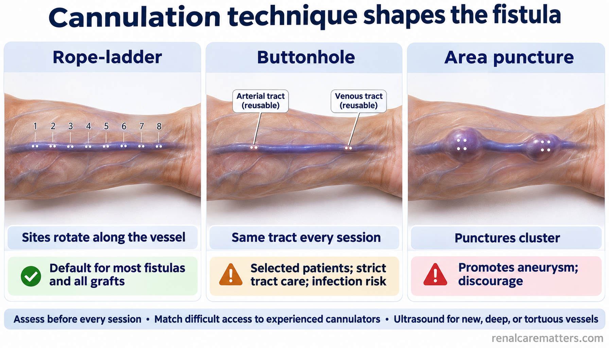
Rope-ladder spreads punctures, buttonhole reuses a tract, and area puncture concentrates injury and promotes aneurysm.
- AVF
- Arteriovenous fistula
© renalcarematters.com
Detect dysfunction before dialysis is lost
Monitoring is the clinical examination and the dialysis session itself: physical examination, difficult cannulation, prolonged bleeding after needle removal, rising venous pressure, falling achievable blood pump flow, unexplained fall in delivered dose, recirculation, and arm swelling. Surveillance is periodic instrument measurement, such as access flow by dilution or duplex. KDOQI 2019 does not support adding routine surveillance to clinical monitoring to improve patency, nor preemptive angioplasty of a stenosis without clinical indicators.1 Guideline
Keep three steps separate: a clinical concern, a confirmatory investigation (duplex or angiography) that shows a lesion and its hemodynamic significance, and a treatment decision that weighs that lesion against the access history and patient goals. A radiologic percentage stenosis alone is not an angioplasty trigger, and a single flow or pressure value should never auto-generate a procedure order. Trends matter more than snapshots, and measurement conditions must match before two values are compared.
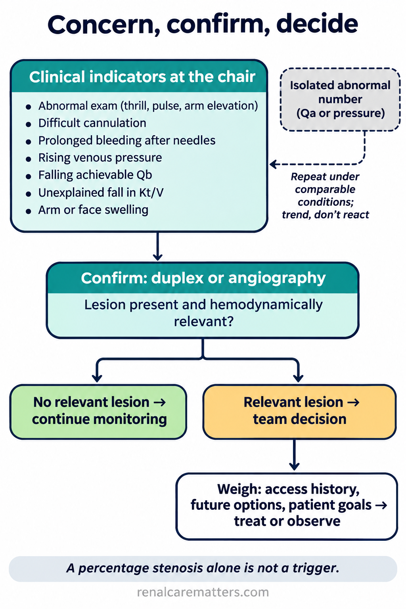
Concern, confirmation, and decision are three separate steps; an isolated number loops back to repeat measurement.
- Qa
- Access blood flow
- Qb
- Blood pump flow
- Kt/V
- Dialysis dose index
© renalcarematters.com
Rescue the access and preserve the next option
Drug-coated balloons. IN.PACT AV Access randomized 330 participants at 29 international sites with dysfunctional native upper-extremity fistulas, after successful high-pressure angioplasty, to a paclitaxel DCB (170) or plain percutaneous transluminal angioplasty (PTA, 160). Through 36 months, TLPP was 43.1% versus 28.6% and access circuit primary patency (ACPP) 26.4% versus 16.6% (both log-rank p < 0.001); access circuit thrombosis was 8.2% versus 18.3%.4 Randomized The 2026 update from the same trial (not an independent replication) reported consistent TLPP direction across lesion and fistula subsets and 60-month freedom from death of 59.0% versus 53.5% (p = 0.51), easing the paclitaxel mortality concern without proving absence of harm.5 These are Kaplan–Meier estimates for one target lesion, not whole-access survival; do not convert them into a conventional number needed to treat (NNT).
A 2026 Chinese multicenter trial in 219 patients with failing fistulas or grafts found a predilation-free scoring paclitaxel-coated balloon improved 6-month TLPP (78.9% versus 57.3%; absolute difference 21.2 percentage points), but the 12-month difference was not significant (63.5% versus 52.4%).15 Randomized Emerging
Thrombosis. After successful endovascular thrombectomy in 186 Taiwanese patients, apixaban 2.5 mg twice daily for 3 months reduced 3-month recurrent access thrombosis (24.0% versus 40.8%; HR 0.52, 95% CI 0.31–0.88) and primary patency failure (32.2% versus 49.5%), with similar major bleeding and death but more minor bleeding (22.6% versus 7.5%).7 Randomized Emerging In crude terms that is about 1 recurrence prevented per 6 patients treated and 1 extra minor bleed per 7, within an open-label design. It informs a case-by-case discussion after thrombectomy; it does not support routine anticoagulation of every new fistula or catheter. No prescribing tool is offered here.
Interventions that did not help. In a Danish multicenter trial of 115 patients with well-functioning fistulas, far-infrared therapy at every session for 1 year did not reduce the proportion needing an intervention, thrombosis, or flow decline.16 Randomized
Succession. Stent-grafts can rescue resistant or recurrent lesions but consume outflow vein and can complicate future surgery; record that trade-off in the passport. A patient with repeated failures needs a multidisciplinary review of the whole circuit, central veins, and goals, with any local threshold for that review cited and documented before it is applied.
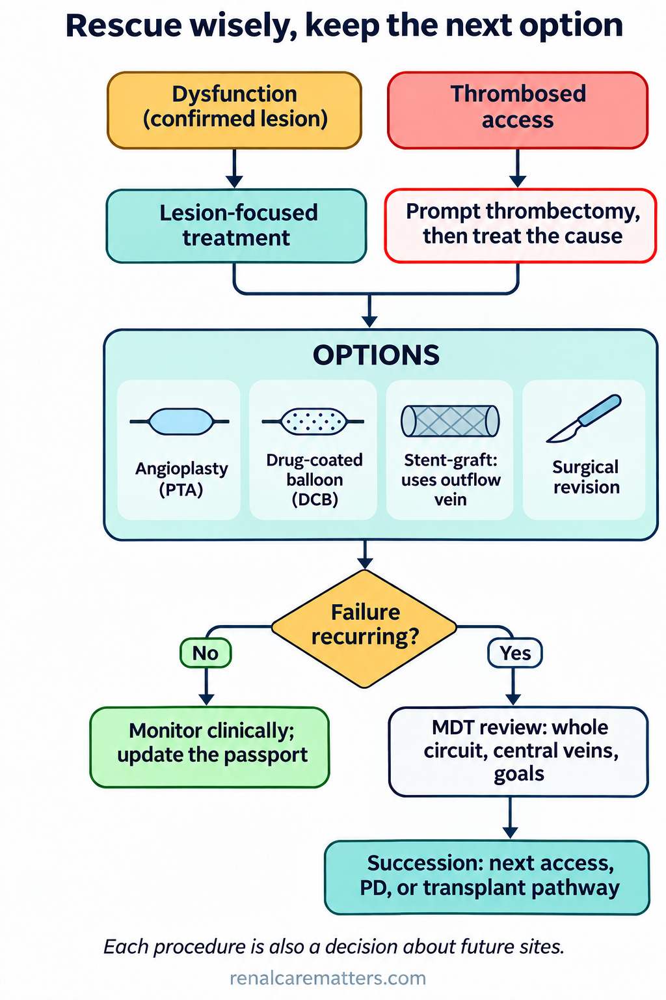
Lesion-focused rescue is chosen with an eye on what it leaves for the next access.
- DCB
- Drug-coated balloon
- PTA
- Percutaneous transluminal angioplasty
- MDT
- Multidisciplinary team
© renalcarematters.com
Make catheter days safer while reducing avoidable dependence
Basic asepsis first. The Centers for Disease Control and Prevention (CDC) Core Interventions combine monthly bloodstream infection (BSI) surveillance with feedback, hand hygiene and catheter-care audits, staff competency, patient education, catheter reduction, chlorhexidine skin antisepsis, hub scrubbing, and exit-site care.14 Review Antimicrobial locks supplement these steps; they do not replace them.
Locks. LOCK IT-100 randomized adults dialyzing through catheters at 70 United States sites to taurolidine 13.5 mg/mL plus heparin 1,000 units/mL or heparin 1,000 units/mL; it stopped early for efficacy. In the full analysis population (795), CRBSI occurred in 9 of 397 versus 32 of 398 participants, 0.13 versus 0.46 per 1,000 catheter-days (HR 0.29, 95% CI 0.14–0.62), with no difference in catheter removal or loss of patency and comparable safety.6 Randomized The 71% figure is a relative hazard reduction; the absolute rate difference is 0.33 per 1,000 catheter-days, so at 10,000 catheter-days the trial rates imply about 4.6 versus 1.3 infections. Industry funding, early stopping, and formulation-specific results argue against assuming a class effect for every antimicrobial lock. In a 2026 Thai trial of 204 patients, 5% trisodium citrate and heparin 1,000 units/mL had similar catheter dysfunction, CRBSI, bleeding, and mortality at 180 days.20 Randomized
Exposure. Track catheter-present days, the reason a catheter remains, and the next step with a named owner. A retained catheter can be the right choice for limited life expectancy, exhausted anatomy, or patient preference; then document the reason and the safety plan rather than counting it as a failure.
Infection prevention is a bundle; antimicrobial locks add to it, and every catheter needs a documented reason and plan.
- CRBSI
- Catheter-related bloodstream infection
- CVC
- Central venous catheter
© renalcarematters.com
High-flow access and the heart
An arteriovenous access is a permanent low-resistance shunt. Most patients tolerate it, but in some, particularly with upper-arm fistulas and pre-existing cardiac disease, a high Qa raises CO enough to contribute to high-output heart failure. In 96 Italian patients, upper-arm fistulas had higher mean Qa (1.58 versus 0.95 L/min) and Qa of 2.0 L/min or more identified the 10 patients classified as having high-output failure with high accuracy (sensitivity 89%, specificity 100%) in that same small cohort.12 Observational That threshold is a prompt for assessment (symptoms, volume status, echocardiography, measurement conditions), not a diagnosis or an automatic indication for flow reduction. Keep access flow (Qa) distinct from the prescribed extracorporeal blood pump flow (Qb).
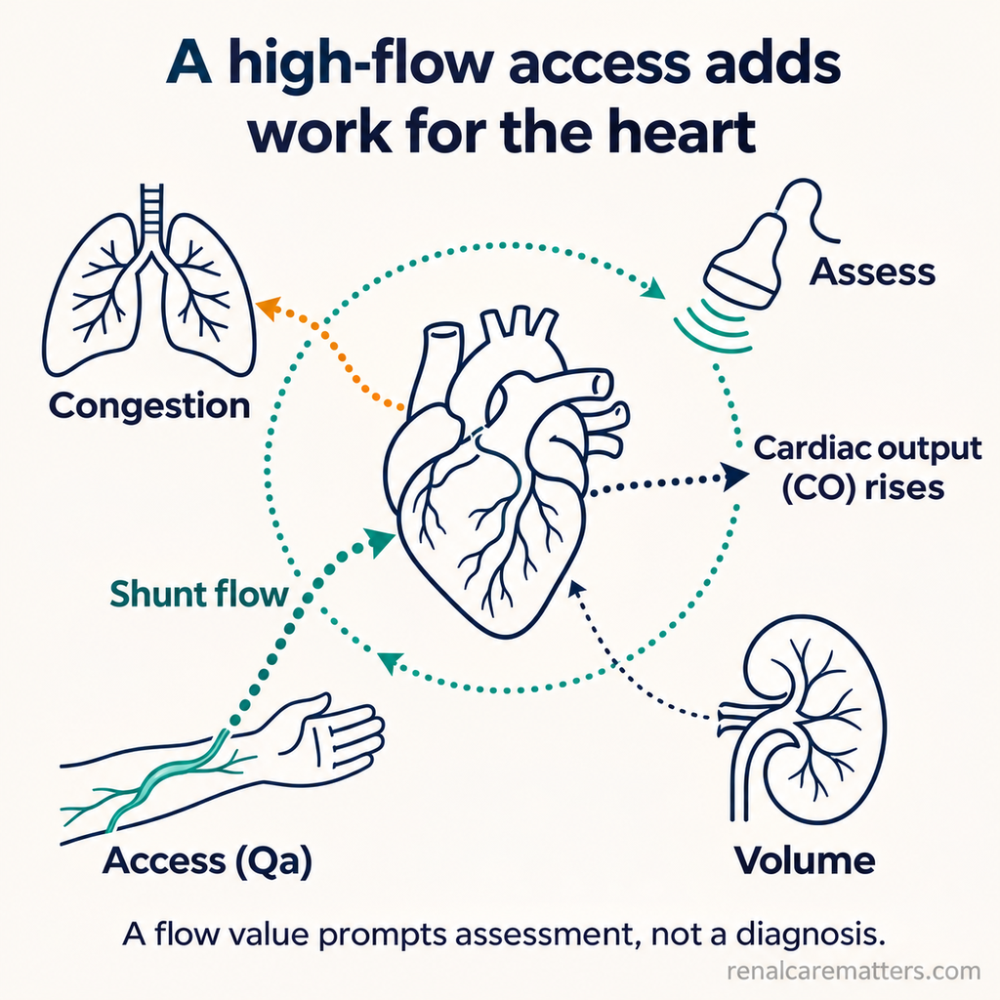
A high-flow access adds to the work of the heart; assessment weighs symptoms, volume, and cardiac function together.
- Qa
- Access blood flow
- CO
- Cardiac output
© renalcarematters.com
What is new, and what is ready
| Development | Evidence (date) | Ready for routine use? |
|---|---|---|
| Individualized Life-Plan replaces “fistula first” | KDOQI 2019 (published 2020); UKKA, August 20251,2 | Yes: practice framework |
| Paclitaxel DCB for fistula stenosis | 36-month randomized controlled trial (RCT, 2023); 5-year mortality update, August 20264,5 | Option where available and funded; lesion-specific |
| Taurolidine/heparin lock | Phase 3 RCT (2023)6 | Depends on local registration, cost, and protocol review |
| Apixaban after thrombectomy | Open-label RCT, online November 2024 (issue 2025)7 | Case-by-case; awaits replication |
| Bioengineered vessel (ATEV) | Phase 3 RCT, August 20269 | Not available locally; verify regulatory status |
| Endovascular fistula | Meta-analysis, March 202618 | Specialist centers; selected anatomy |
| Exercise for access | Small RCTs, 2026; vessel diameter surrogates17,21 | Low-risk adjunct; outcome benefit unproven |
| Far-infrared therapy | RCT, 2026; no benefit16 | No |
A 2026 single-center trial of 100 patients reported that a 12-week exercise program increased access vessel diameter by 0.9 versus 0.1 mm and improved walking distance and quality-of-life scores.21 Randomized Vessel diameter is a surrogate; the trial did not show fewer access failures. A 2026 narrative review in Clinical Kidney Journal argues that outcomes depend on a coherent, longitudinal, nephrologist-coordinated approach rather than any single intervention, a view this guide shares.13 Review
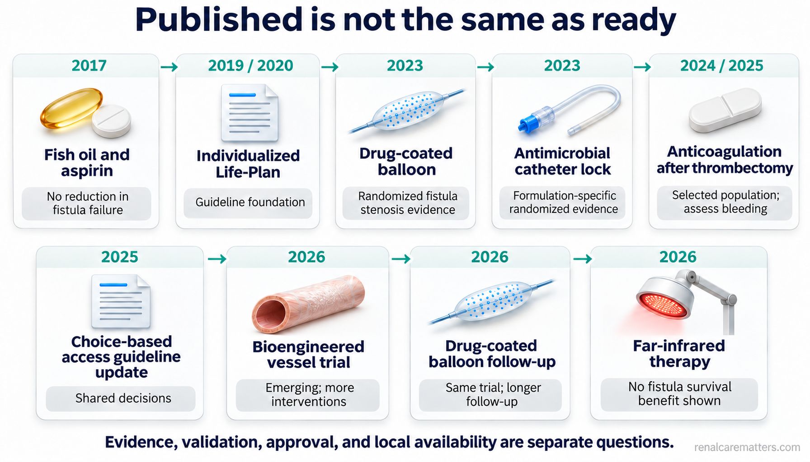
Publication is not the same as validation, regulatory approval, or local availability.
- DCB
- Drug-coated balloon
- ATEV
- Acellular tissue-engineered vessel
- eAVF
- Endovascular arteriovenous fistula
© renalcarematters.com
Measure what matters, with honest denominators
A unit cannot improve what it does not count, and it cannot compare what it counts differently. Report each metric separately with its definition, denominator, and time origin; avoid a composite “lifeline health” score that hides trade-offs.
| Metric | Definition and denominator |
|---|---|
| Catheter exposure | Catheter-present days divided by observed patient-days; union of overlapping intervals; state whether present or actually used |
| Time to sustained use | Creation date to first date of reliable two-needle dialysis |
| Primary, assisted, secondary patency | Kaplan–Meier from creation or from intervention; state the time origin and censoring rules |
| Access-related infection | Events per 1,000 catheter- or access-days with exact 95% CI; keep CRBSI, all BSI, and surveillance definitions distinct |
| Intervention burden | Maturation and maintenance procedures separately, per access-year |
| Patient experience | Cannulation pain, missed sessions, delay to specialist review |
Implementation notes for Philippine units
The trials above were conducted in the United States, Europe, East Asia, and Egypt. Their device availability, costs, and outcomes should not be presented as Philippine facts. Points to configure locally:
- Emergency starts. Many patients start hemodialysis through a catheter after late referral. Early nephrology referral, KFRE-informed timing, and a protected-arm order set are the highest-yield local levers.
- Coverage. PhilHealth hemodialysis benefits and HMO coverage for access creation, catheters, angioplasty, and locks change over time; confirm current rules before counseling on costs, and keep patient out-of-pocket costs separate from payer costs.
- Devices and drugs. Confirm Food and Drug Administration (FDA) Philippines registration and hospital formulary status for drug-coated balloons, antimicrobial lock solutions, and newer devices before recommending them.
- Surveillance data. Units can track catheter exposure, infection rates, and intervention burden with the calculators below, then review them in quality meetings alongside the unit’s quality assessment and performance improvement (QAPI) scorecard.
What we still do not know, and tools we deliberately did not build
- No drug reliably improves maturation. Fish oil, aspirin, and far-infrared therapy failed on patient-relevant endpoints; apixaban data are early and open-label.8,11,16
- Durability beyond trial horizons of DCBs, eAVF, and ATEV is unknown; intervention burden often rises as patency improves.
- Maturation prediction from postoperative ultrasound remains moderate and internally validated; a numeric “probability of maturation” tool is withheld until full-model extraction and external validation are done.10
- A lifetime access survival score would need repeated measures, competing risks (death, transplant), multicenter external and temporal validation, calibration, and decision-curve analysis. None exists, so none is offered.
- Clinical review. This guide and its calculators are built for nephrologist, access-nursing, vascular and interventional, and infection-control or pharmacy review; treatment logic in the tools is limited to arithmetic and never recommends a procedure or drug.